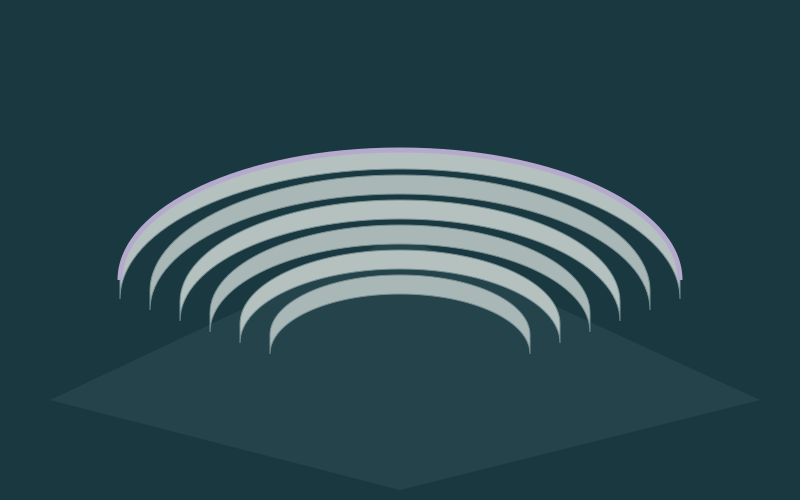
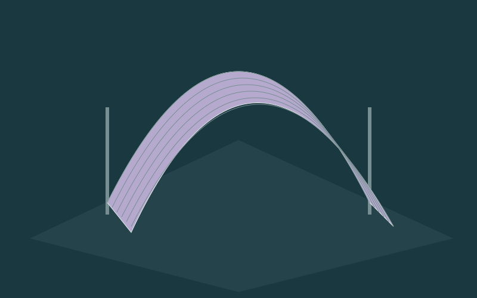
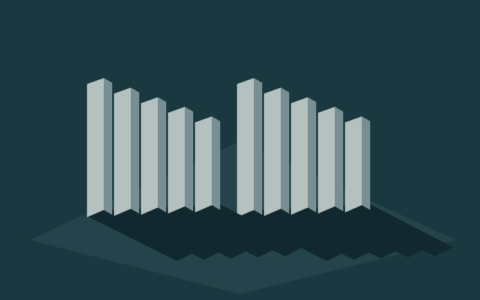

01 / Sand amphitheatre
A horizon that comes back.
Six tiers frame an empty centre. Follow the contour from the edge inwards; the light lets you see the distance between steps.
Virtual exhibition / personal route
Pick the spaces, change the light direction and set the order.

01 / Sand amphitheatre
Six tiers frame an empty centre. Follow the contour from the edge inwards; the light lets you see the distance between steps.

02 / Fabric vault
A hanging fabric vault gathers the space above you. Change the light direction and watch the folds become a surface.

03 / Shadow valley
Two rows of upright planes leave a passage. Explore the distances and the lengthening shadows; the architecture itself stays still.
Checking the space preview.
Personal order
Add environments and arrange your own way through the exhibition.
Empty for now. Choose an environment and press "Add".
Your choices stay only in this device's browser.
The idea
Three spaces offer three ways of looking: follow a contour, read a fold, notice a gap.
The route is kept only in this browser's local storage. We send it to no one. The downloaded text is a note of your choices. Clearing the route also clears this exhibition's record in the browser.